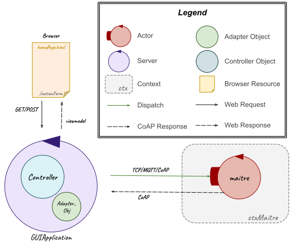
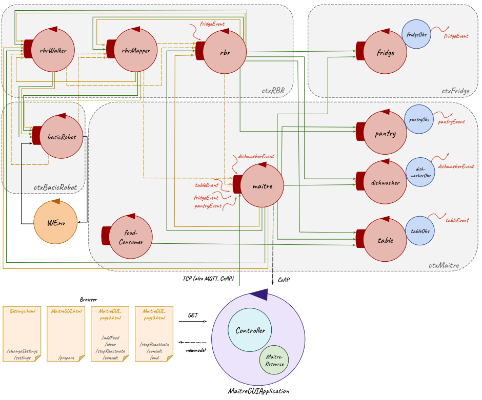

Introduction
The starting point for this SPRINT is the resulting model from the previous Sprint 2:| Machine Understandable Architecture Model | A Possible Graphic Representation |
|---|---|
|
Sprint 2 model.qak |
 
|
Goal
- GUI for
maître's smartphone software
Problem Analysis
GUI for Maître's Smartphone Software
By requirements, the user (To do that, as already said in the initial problem analysis, the software running on the
Therefore, to to solve this sprint goal, the main problem which/that must be addressed are detailed below. / Therefore, to to solve this sprint goal, the main problem which must be addressed are: how to realize the GUI that will be a web application and so which architecture will/should be represented; how the two parts (GUI/web application and system application??, so the maitre actor of the system application) must communicate; how to change the mock maitre actor in an actor.
GUI for Maître's Smartphone Software
This web application con be realize as a gradle project using Spring.?? (Qua o nella parte di progetto?)System Architecture
This application could be developed using the MVC (Model-View-Controller) pattern and making sure the system architecture respects the hexagonal architecture, which allows the communications between the front-end and the back-end by inserting an adapter object. In this way, the web application (front-end) can communicate with the system application (back-end) through the adapter object: the user can select elements on the web interface (view), which can be read by the controller, which can communicate with the (model?) maitre actor through the adapter object.Communications
As already said the adapter object allow the communications between the two parts (front-end and back-end); this can be done in different ways through different protocols (TCP, MQTT, CoAP). With regard to the previous choices, the more appropriate way to realize this could be the using of the CoAP protocol: the controller through the adapter object sends messages (dispatch) to the maitre, which, when necessary, updates its state (through the updateResource command) so to make possible for the adapter object to read it via CoAP and to commnicate it to the controller.Maitre
To can receive dispatch messages from the controller through the adapter, the maitre actor doesn't must be anymore a mock client and so it must be redesigned.
APPUNTI:
The maitre software sends and recevies the same messages and events of the mock maitre in the previous Sprint. To realize it, it's possible to develop an actor which recives, through messages, the commands to send to the other system elements.
Scaletta: - soluzione: - View: html-tymeleaf - Controller: Spring, chiama Adapter - Adapter: osserva via CoAP il maitre per leggere aggiornamento stato del maitre - Model: Maitre actor, che aggiorna il proprio stato (updateResource)
Test Plans
With reference to the initial problem analysis test plans, below it's reported a functional tests planning related to the goal of this sprint:- Tests of all the communications between entities;
- Tests of the mutual exclusion of
tasks and of their order of execution; - Tests of the stop and reactivate commands that can be used by
Maître de salle only when there is a runningtask .
Project
With regard to what it has been said in the problem analysis of this sprint, in this design phase it has been redesigned the maitre actor, which is not anymore a mock actor and then it has been designed the GUI for the maitre smartphone software ??.Maitre
The maitre actor in this sprint has been redesigned to not be (anymore) a mock actor. In particular, it maintains its behavior but now it can receive (from the web application, and in particular from the controller through the adapter object) some commands/messages as dispatch: prepare; addFood; clear; consult; stop; reactivate; end.In detail, when it receives the message:
- prepare(Crockery, Food), where Crockery and Food are empty string or a list respectively of crockery and food; so to allow/to add the possibility for the maitre to insert/decide/select the elements for the task Prepare the room, as said in the initial problem analysis. As for/in the previous sprints, for the first case, the maitre actor loads the default elements from the prolog file (Prepare.pl); otherwise it use the new elements. Then it sends the prepare message to the rbr specifing the (default or new) food and crockery;
- prepare(Crockery, Food), where Crockery and Food are empty string or a list respectively of crockery and food. In the latter case, the prolog file (Prepare.pl) is updated with the new elements. Then, as for/in the previous sprints, the maitre actor loads the (default or new) elements from the prolog file (Prepare.pl) and sends the prepare message to the rbr specifing that food and crockery elements;
- addFood(FOOD_CODE), where FOOD_CODE is the food code; so to allow/to add the possibility for the maitre to insert/decide/select the food code for the task Add Food. The prolog file (Prepare.pl) is updated with the new element/food code. Them, as for/in the previous sprints, the maitre actor loads the new element from the prolog file (Prepare.pl) and sends the addFood message/request to the rbr specifing the food code;
- addFood(FOOD_CODE), where FOOD_CODE is the food code used by the maitre actor to send the addFood message/request to the rbr;
- clear: as for/in the previous sprints, the maitre actor sends the consult message/dispatch to the table to get/know the items (crockery and/or food) to remove and then it sends the clear message/dispatch to the rbr specifing that food and crockery elements;
- consult: as for/in the previous sprints, the maitre actor sends the consult message/dispatch to all resources and waits for their answers;
- stop: as for/in the previous sprints, the maitre actor sends the stop message/request to the rbrwalker and only when it receives from the rbrwalker the stopped(true) reply then it waits for the reactivate message/dispatch. Here, it has been added the possibility to wait also a consult, but at the end of this case, it checks if it was in stop state and then it wait again for a reactivate or consult message/dispatch;
- reactivate: as for/in the previous sprints, it sends the reactivate message/dispatch to the rbrwalker;
- end: it terminates itself.
| Machine Understandable Models | A Possible Graphic Representation |
|---|---|
|
|
 |
| Moore State Machine Diagrams | |
 
|
GUI
The software of / This web application has been realized as a gradle project (MaitreGUI) using Spring./as a web app using the Spring framework.With regard of what said in the problem analysis of this sprint, this project is composed by: a package src/main/kotlin/it/unibo/maitreGUI with a controller (Controller.kt), an adapter object (MaitreResource.kt), a support for CoAP connection (CoapSupport.kt) and a main (MaitreGuiApplication.kt); a package src/main/kotlin/it/unibo/connQak with ...
With regard of what said in the problem analysis of this sprint, in this project there are two packages in src/main/kotlin/it/unibo (maitreGUI and connQak) and in src/main/resources/templates there are the HTML files for which it has been used thimeleaf and GET methods to send informations.
In particular, in the maitreGUI package there are:
- an adapter object (MaitreResource.kt), (which constructor (is) MaitreResource(name: String, addrdest: String, portdest: String, ctxdest: String, actordest: String, protocol: ConnectionType) (requires the ...) and) which offers methods to send messages (dispatch) to the maitre actor and to receive answers via CoAP;
- a controller (Controller.kt), which reads informations from the view (HTML files/pages) and uses the adapter object MaitreResource to communicate with the maitre actor. Here, it's also added the possibily to change the value to call the adapter object (like the address, the port and the context of the destination actor and the type of protocol (TCP, COAP, MQTT (implemented here but not maitre side/in the application software), HTTP(not yet implemented)) to communicate with it);
- a support for CoAP connection (CoapSupport.kt), used by the MaitreResource to can read the answers received by the maitre actor via CoAP;
- a main (MaitreGuiApplication.kt) to run the application.
- sysConnKb.kt, used to take and set the ... to use for the communications between MaitreResource and destination actor (maitre) (TCP, COAP, MQTT or HTTP (not implemented) to send messages and COAP to receive/read maitre state update);
- connQakBase.kt, which works as a factory class for classes to sends messages to the actors using the TCP, HTTP, CoAP and MQTT protocols;
- some classes (one for each type of connection) used by connQakBase.
APPUNTI: The software it's realized as a web app using the Spring framework.
The package it.unibo.connQak implements functions to send message to the actors with different protocols(in TCP, MQTT, CoAP, HTTP); the connQakBase works as a factory class for classes to sends messages to the actors using the TCP, HTTP, CoAP, MQTT protocols.
The maitreResource sends the commands to the maitre actor by TCP and receives the answers observing by CoAP the actor; in an hexagonal architecture this class is the use case.
The controller works as a Spring controller and intercepts the Get request to execute the right behaviuor using maitreResource and showing the right HTML page.
Immagine view => controller => maitreResource (use cases)
APPUNTI:
To can receive dispatch messages from the controller through the adapter, the maitre actor doesn't must be anymore a mock client and so it must be redesigned.
MaitreResource as adapter object Controller as controller Maitre.html, Maitre_page2 ... as interface using thimeleaf
The maitre actor waits for the messages: prepare, consult, addFood, clear, stop, end. When it receives the message:
- prepare: sends the prepare message to the rbr specifing the food and the crockery;
- addFood: sends the addFood message to the rbr specifing the food;
- clear: sends the consult message to the table to get the items to remove; sends the clear message to the rbr specifing the food and the crockery;
- consult: sends the consult message to all resources and waits for their answers;
- stop: sends the stop message to the rbr when this is received it waits just for the reactivate message;
- reactivate: sends the reactivate message to the rbr;
- end: sends the end message to the rbr and terminate.
MaitreGui
The software it's realized as a web app using the Spring framework.The package it.unibo.connQak implements functions to send message to the actors with different protocols(in TCP, MQTT, CoAP, HTTP); the connQakBase works as a factory class for classes to sends messages to the actors using the TCP, HTTP, CoAP, MQTT protocols.
The maitreResource sends the commands to the maitre actor by TCP and receives the answers observing by CoAP the actor; in an hexagonal architecture this class is the use case.
The controller works as a Spring controller and intercepts the Get request to execute the right behaviuor using maitreResource and showing the right HTML page.
Immagine view => controller => maitreResource (use cases)
| Machine Understandable Models | A Possible Graphic Representation |
|---|---|
|
Controller.kt MaitreResource.kt |

|
| Moore State Machine Diagrams/htlm pages images?? | |
 
|
Testing
The tests for this sprint ... non sono stati fatti in quanto il maitre/il funzionamento del sistema era già stato testato negli sprint precedenti; mentre per quanto riguarda la parte di GUI, questa può essere testata provando a inviare comandi al maitre tramite la web application.Model of System's Logical Architecture
| Machine Understandable Architecture Model | A Possible Graphic Representation |
|---|---|
|
Sprint 3 model.qak |
  |
Deployment
SCRUM Context
SPRINT Sequence
After this Sprint and according to the Product Backlog, listed after the problem analysis, a possibile set of next Sprint could be:- SPRINT 4
- Deploy on Raspberry
Prepare the room task : execution by the real robotAdd Food task : execution by the real robotClear the room task : execution by the real robot- Tests